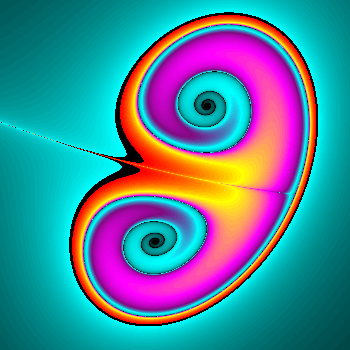

Un fractal
es un objeto geométrico cuya estructura básica, fragmentada o aparentemente irregular,
se repite a diferentes escalas. El término fue propuesto por el matemático Benoît Mandelbrot en 1975
y deriva del latín fractus, que significa quebrado o fracturado. Muchas estructuras naturales son de tipo fractal.